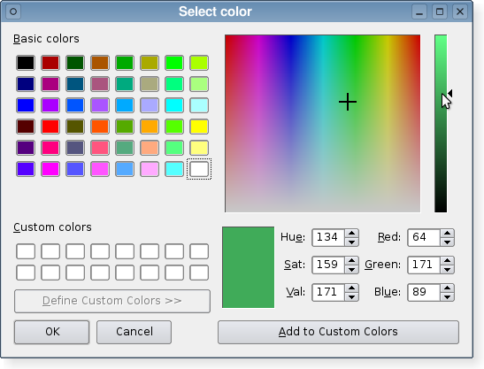

| Home · All Classes · Modules · QSS HELP · QSS 案例 · VER007 HOME |
该QColorDialog类提供了一个对话框控件指定颜色。More...
继承QDialog。
该QColorDialog类提供了一个对话框控件指定颜色。
颜色对话框的功能是让用户选择的颜色。例如，您可以使用这一个绘图程序，以允许用户设置画笔的颜色。
静态函数提供了模态对话框的颜色。
静getColor（）函数显示对话框，并且允许用户指定颜色。此功能也可以用来让用户选择一种颜色与透明度级别：通过ShowAlphaChannel选项作为附加参数。
用户可以存储customCount（ ）不同的自定义颜色。自定义颜色是由所有的颜色对话框共享，程序的执行过程中记住。使用setCustomColor（ ）来设置自定义颜色，并使用customColor（）来获取它们。
该Standard Dialogs示例显示了如何使用QColorDialog以及其他内置Qt对话框。

此枚举指定了影响颜色对话框的外观和感觉的各种选项。
| Constant | Value | Description |
|---|---|---|
| QColorDialog.ShowAlphaChannel | 0x00000001 | 允许用户选择一种颜色的alpha分量。 |
| QColorDialog.NoButtons | 0x00000002 | 不显示OK和Cancel按钮。 （有用的“现场对话” 。 ） |
| QColorDialog.DontUseNativeDialog | 0x00000004 | 使用Qt的Mac上的标准颜色对话框，而不是苹果的原生颜色面板。 |
这个枚举被引入或修改的Qt 4.5 。
该ColorDialogOptions类型是一个typedef为QFlags\u003cColorDialogOption\u003e 。它存储ColorDialogOption值的或组合。
See also options，setOption（ ）testOption（）和windowModality（ ） 。
该parent的说法，如果不是没有，原因self通过Qt的，而不是PyQt的拥有。
构造一个颜色对话框与给定parent。
此功能被引入Qt的4.5 。
该parent的说法，如果不是没有，原因self通过Qt的，而不是PyQt的拥有。
构造一个颜色对话框与给定parent并指定initial颜色。
此功能被引入Qt的4.5 。
从重新实现QWidget.changeEvent（ ） 。
返回自定义颜色在给定的index作为QRgb值。
此功能被引入Qt的4.5 。
See also setCustomColor（ ） 。
返回所支持的自定义颜色数QColorDialog。所有的颜色对话框共用相同的自定义颜色。
从重新实现QDialog.done（ ） 。
关闭对话框，并将其结果代码result。如果显示此对话框exec_（ ） ， （）完成将导致本地事件循环来完成，并exec_（ ）返回result。
See also QDialog.done（ ） 。
弹出的窗口给出一个模式对话框的颜色title（或“选择颜色” ，如果没有指定） ，让用户选择一种颜色，并返回该颜色。彩色初始设定为initial。对话框是一个孩子parent。它返回一个无效的（见QColor.isValid（ ） ）如果用户取消该对话框的颜色。
该options参数允许您自定义对话框。
在Symbian ，这个静态函数将使用原生颜色对话框，而不是一个QColorDialog。在Symbian的参数title和parent有没有相关性和options参数仅用于定义是否被使用或不是天然颜色对话框。
此功能被引入Qt的4.5 。
弹出一个模态对话框颜色，让用户选择一种颜色，并返回该颜色。彩色初始设定为initial。对话框是一个孩子parent。它返回一个无效的（见QColor.isValid（ ） ）如果用户取消该对话框的颜色。
在Symbian ，这个静态函数将使用原生颜色对话框，而不是一个QColorDialog。
显示该对话框的window modal dialog，立即返回。
此功能被引入Qt的4.5 。
See also QDialog.open（ ） 。
这是一个重载函数。
在打开的对话框并连接其colorSelected（）信号到由指定的槽receiver和member。
该信号会从插槽中断开时，关闭对话框。
此功能被引入Qt的4.5 。
返回用户选择通过单击颜色OK或等效按钮。
Note:这种颜色并非总是一样的保持的颜色currentColor因为用户属性终于可以选择一个使用之前选择不同的颜色。
设置在自定义颜色index到QRgb color值。
Note:此功能并不适用于本机颜色对话框上的Mac OS X平台。如果您仍然需要使用此功能，请使用QColorDialog.DontUseNativeDialog选项。
See also customColor（ ） 。
设置给定option被启用，如果on是真的，否则，清除给定的option。
See also options和testOption（ ） 。
设置标准色在index到QRgb color值。
Note:此功能并不适用于本机颜色对话框上的Mac OS X平台。如果您仍然需要使用此功能，请使用QColorDialog.DontUseNativeDialog选项。
从重新实现QWidget.setVisible（ ） 。
更改对话框的可见性。如果visible为真，则显示的对话框，否则，它是隐藏的。
返回True如果给定的option被启用，否则返回False 。
此功能被引入Qt的4.5 。
See also options和setOption（ ） 。
这是该信号的默认超载。
这个信号被发射的用户点击后刚OK选择要使用的颜色。所选择的颜色是由指定的color。
See also color和currentColorChanged（ ） 。
这是该信号的默认超载。
这个信号被发射时的对话在当前的颜色变化。当前颜色被指定color。
See also color和colorSelected（ ） 。
| PyQt 4.10.3 for X11 | Copyright © Riverbank Computing Ltd and Nokia 2012 | Qt 4.8.5 |